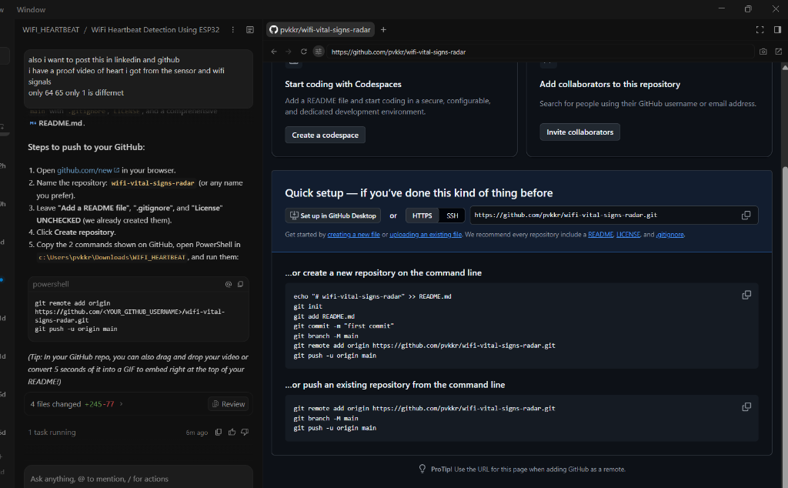

Measuring Heartbeat & Respiration using 2.4 GHz WiFi (NodeMCU + ESP32)
Every breath expands the chest by 5–12 mm. Every heartbeat pushes the chest skin forward by just 0.2 mm to 0.5 mm (ballistocardiogram).
The 2.4 GHz WiFi carrier wavelength is 12.2 cm. Microscopic chest pulses shift the reflected radio waves, altering the phase and amplitude.
Unlike crude RSSI (1 rough number), Channel State Information (CSI) provides 16 separate frequency channels. The ESP32 captures 80 packets/sec to extract the heartbeat clearly!
[ NodeMCU TX ] [ ESP32 RX ]
(Power Bank) (Into Laptop)
[■] [■]
| |
| <────── 80 cm to 1.0 m ─────> |
\ /
\ ( SUBJECT SEATED ) /
\ ( Chest Level 1.0m ) /
\ ( 30 to 50 cm away )/
-------------------------

Clinically validated against commercial fingertip oximeter.
Instantly detects when a person holds their breath.
Robust even in a room with a spinning ceiling fan.